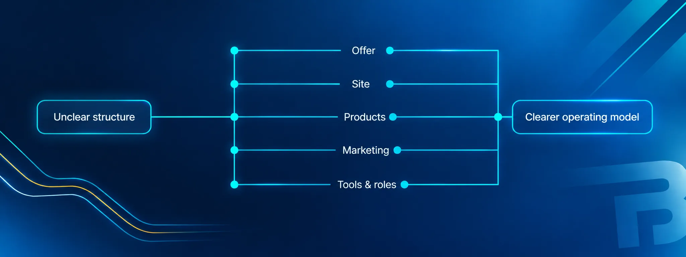

Turning a complex creative venture into a clearer operating model.

The situation
subtyped.me was an ambitious creative venture with a compelling concept but an unclear structure. The offer, the product range, the website, the marketing priorities and the team's responsibilities all needed definition. The challenge wasn't a single broken thing — it was that the organisation behind the idea hadn't yet been built clearly enough to deliver it.
Analysis & findings
The work began by understanding the venture as a system rather than a set of separate tasks. That meant reviewing the mission and target audience, the marketing plan, the offers and organic social strategy, and — just as importantly — the operating reality behind them: team structure, the sitemap, product statuses, and the tools the team actually used day to day.
The analysis surfaced several things at once: the offer wasn't clearly defined; the product range needed rationalising; the website needed simplifying; marketing priorities needed to be set rather than improvised; and practical tools and responsibilities weren't yet in place. SEO was recorded as non-existent at the time, and the team relied on a loose collection of tools (Discord for communication, Google Sheets and Docs for operations, a site built on Lovable, and a custom Discord bot in development).

My contribution & decisions
As Interim CEO & Head of Marketing, the contribution spanned product and service structure, organisational guidance, website architecture, marketing planning and operating systems. In practice that meant:
- Clarifying the offer — what the venture actually was, and how to talk about it.
- Simplifying the site — restructuring the website so it communicated the offer rather than obscuring it.
- Rationalising products — bringing order to a product range that had grown without a clear structure.
- Defining marketing priorities — turning a broad ambition into a sequenced plan, including organic social on X and Bluesky and consistent brand management.
- Establishing practical tools and responsibilities — Discord for communication, Google Sheets and Docs for operations, and clearer ownership across the team.
Recommendations & documented interventions
What is documented: the role and the scope of work above are recorded in the project documents. What is not claimed: that every recommendation was implemented, or that the venture reached a particular outcome as a result of this work. Some interventions were put in place during the engagement; others were recommendations for the team to carry forward.
Outcomes & limitations
No quantified outcomes are documented. There are no available figures for growth, conversion or revenue, and none are claimed. A reliable current public state for the project could not be established from available evidence, so this case study describes the documented contribution rather than measured results. It is presented as evidence of approach, not of impact.
What this demonstrates
The compelling story here isn't "I made a marketing plan". It's that entering a project with an ambitious concept and an unclear structure, the work imposed order across the organisation — clarifying the offer, simplifying the site, rationalising products, defining marketing priorities, and establishing the practical tools and responsibilities the team needed to operate. That is systems and operational improvement in practice.
Capabilities involved
Facing a similar tangle?
If your venture has the idea but not the structure, that's exactly the kind of problem this case study is about.
Or go straight to the source
- harley@bradfordindependent.com
- I'll get back to you within a day.